| 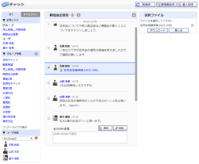 |
一覧 ・ グループ管理
メッセージの送受信と、チャットグループの作成・編集・削除を行うことができます。 |
|---|---|
 |
管理者設定
管理者グループに所属するユーザのみ使用可能な機能のメニュー画面です。 |
| 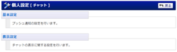 |
個人設定
チャットの個人設定を行う機能のメニュー画面です。 |
| 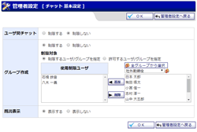 |
基本設定 ・ 基本設定確認
ユーザ間チャット、グループ作成の制限設定や既読表示の管理を設定できます。 |
| 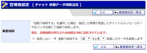 |
自動データ削除設定 ・ 自動データ削除確認
チャットグループ/ユーザ間チャットの全メッセージを自動で削除するための設定を行う画面です。削除は日次バッチ処理時に実行されます。 |
| 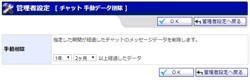 |
手動データ削除 ・ 手動データ削除確認
チャットグループ/ユーザ間チャットの全メッセージを手動で削除するための設定を行う画面です。 |
| 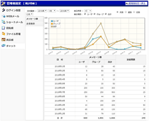 |
統計情報
チャットのメッセージ数・送信者数の統計の確認ができます。 |
| 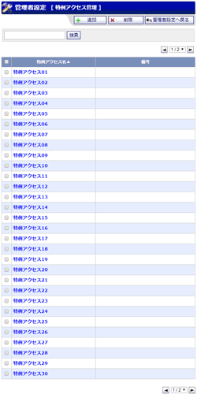 |
特例アクセス管理
特例アクセスの管理を行うことができます。 |
| 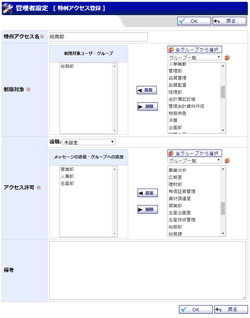 |
特例アクセス登録 ・ 編集 特例アクセス登録確認 ・ 編集確認 特例アクセスの登録・編集を行うことができます。 |
| 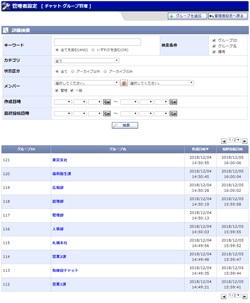 |
グループ管理
チャットグループの管理を行うことができます。 |
| 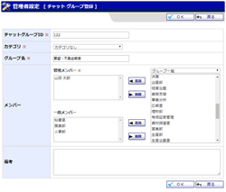 |
グループ登録 ・ 編集 グループ登録確認 ・ 編集確認 チャットグループの登録・編集を行うことができます。 |
| 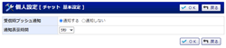 |
基本設定
チャットに関する基本設定を行うことができます。 |
| 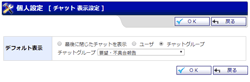 |
表示設定
チャット一覧画面を開いた際のデフォルト設定を行うことができます。 |
| 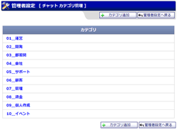 |
カテゴリ管理
チャットグループに設定できるカテゴリの管理を行うことができます。 |
| 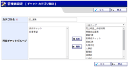 |
カテゴリ登録 ・ 編集 カテゴリ登録確認 ・ 編集確認 カテゴリの登録・編集を行うことができます。 |